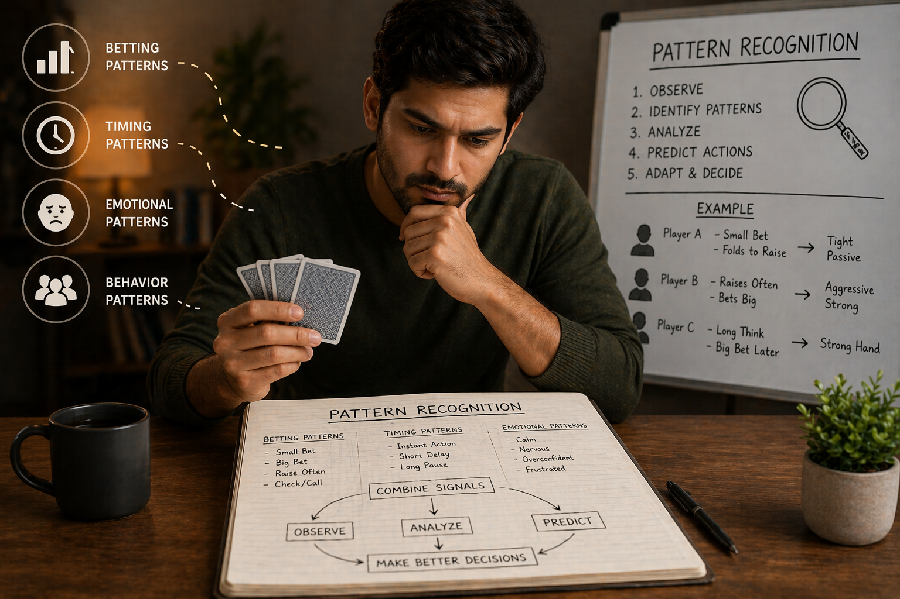

🪶 Introduction
In Teen Patti, the biggest advantage does not come from cards — it comes from understanding patterns.
Every player, whether they realize it or not, develops patterns in:
- Betting behavior
- Decision timing
- Emotional reactions
👉 If you can recognize these patterns, you can predict actions before they happen.
🖼️ Pattern Recognition Overview

🎯 What Is Pattern Recognition?
Pattern recognition is the ability to:
- Identify repeated behaviors
- Detect changes in behavior
- Use that information to make better decisions
👉 Instead of reacting randomly, you begin to play with insight.
🧠 1. Betting Pattern Recognition
One of the most important patterns is how players bet.
Common betting patterns:
📌 Consistent Small Bets
- Player prefers safety
- Usually cautious or unsure
📌 Sudden Large Bets
- Could indicate strong hand
- Or a bluff attempt
📌 Gradual Increase
- Building confidence
- Often strong or improving position
👉 Over time, these patterns become predictable.
🧠 2. Timing Patterns
How fast someone acts tells you a lot.
Observations:
- Instant action → Often automatic decision, may indicate weak or pre-planned move
- Long pause → Thinking deeply, could indicate uncertainty or strength
👉 Timing alone is not enough — combine it with other signals.
🧠 3. Emotional Patterns
Emotions create very clear patterns.
Signs to watch:
- Frustration after losing
- Overconfidence after winning
- Nervous gestures
👉 Emotional patterns are often easier to exploit than card strength.
🧠 4. Repetition Patterns
Many players repeat the same behavior.
Examples:
- Always raising with strong hands
- Always folding under pressure
- Bluffing in similar situations
How to use this:
- ✔ Identify repetition
- ✔ Predict next move
- ✔ Counter accordingly
👉 Repetition is where pattern recognition becomes powerful.
🧠 5. Deviation from Patterns
Sometimes, the most important signal is when a pattern breaks.
Example:
- A passive player suddenly becomes aggressive
- A fast player suddenly hesitates
👉 This usually means:
- Strong hand
- Bluff attempt
- Change in strategy
👉 Changes in behavior are more important than behavior itself
🧠 6. Combining Multiple Signals
Never rely on a single pattern.
Strong analysis combines:
- Betting behavior
- Timing
- Emotion
- Table context
👉 The more signals align, the stronger your read.
🧠 7. Pattern-Based Decision Making
Once you recognize patterns, your decisions improve.
Instead of guessing, you start asking:
- What pattern is this?
- Have I seen this before?
- What usually follows this behavior?
👉 Decision becomes data-driven, not emotional
🧠 8. Avoiding False Patterns
Not every behavior is a pattern.
Common mistake:
- ❌ Overinterpreting one event
Correct approach:
- ✔ Look for repetition
- ✔ Confirm with multiple rounds
- ✔ Stay objective
👉 Good pattern recognition requires patience.
🧠 9. Your Own Patterns (Important)
You also create patterns.
Risk:
- Other players may read you
Solution:
- ✔ Mix your behavior
- ✔ Change timing
- ✔ Avoid predictability
👉 The best players are hard to read.
⚠️ Common Mistakes in Pattern Recognition
- Relying on a single observation
- Ignoring context
- Overconfidence in predictions
- Not adapting when patterns change
❓ FAQ
How do I recognize patterns in Teen Patti?
Observe betting sizes, timing, and emotional reactions over multiple rounds to identify consistent behaviors.
What is the most reliable pattern?
Betting patterns combined with timing are usually the most reliable indicators of hand strength or intent.
How do I hide my own patterns?
Mix up your play style, vary your timing, and occasionally make unpredictable moves to keep opponents guessing.
🧾 Summary
Pattern recognition allows you to:
- Predict opponent actions
- Reduce uncertainty
- Make smarter decisions
- Gain long-term advantage
🎯 Key takeaway:
👉 The game becomes easier when you understand people, not just cards